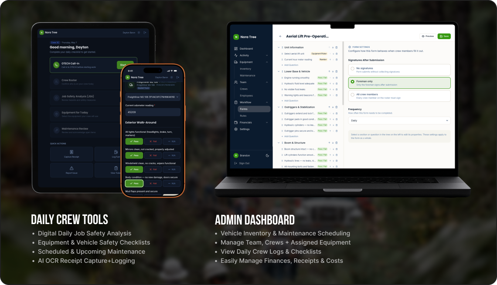
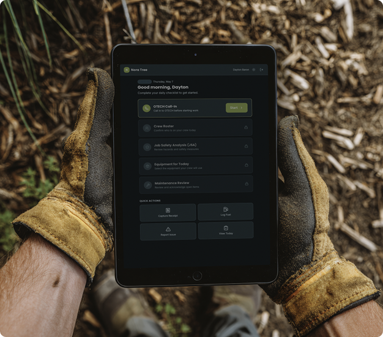
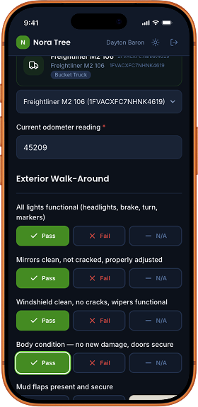
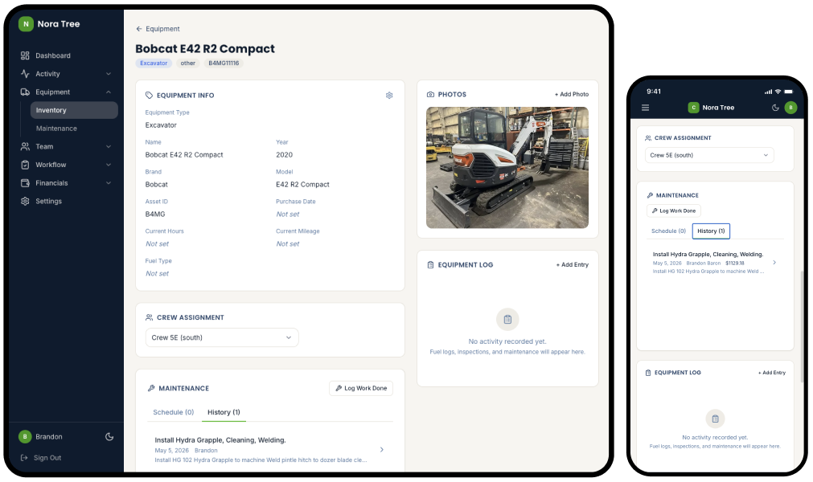

Most field-ops software is built for the office. Brandon’s crew fills it out covered in mulch with chainsaw chaps still on. The brief was simple: rebuild the daily routine from the truck seat backwards, then give the office whatever falls out of that. This is what fell out.
The crew wasn’t the problem. The tools were too generic, and admin took an hour every night reconciling four sources to know what happened that day.
I rode along for two days, designed for the truck instead of the office, and shipped a single tool in four weeks that replaced the whole stack. Every decision after week one had to survive the same test: does this make a guy in gloves faster, or slower?

Filled out each morning before the crew leaves the yard. 90 seconds, signed digitally, done.

The crew uses this in gloves. Half of them have rural cell service. None of them want a forgotten password between them and a paying job.
43 pieces of equipment imported from Brandon’s insurance schedule on day three. Each one tracks its own maintenance schedule, parts costs, fuel logs, inspection history, and crew assignment.

“I can’t believe how simple this is compared to the other app we’ve tried before.”
— Dayton, General Foreman
“This is some seriously awesome sh!t.”
— Brandon, Owner of The Tree Service
“Bring me your ideas. Seriously, I am making this for you. How do you want it to work?”
— Hunter, the guy making this tool
I build custom AI-assisted tools for small businesses — one tool, custom-fit, that replaces the stack of half-used SaaS subscriptions you’re paying for. If that sounds like you, let’s talk.